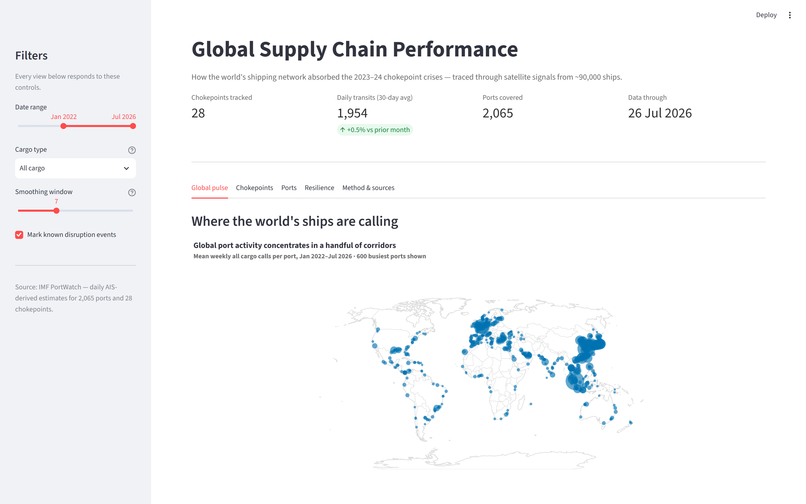
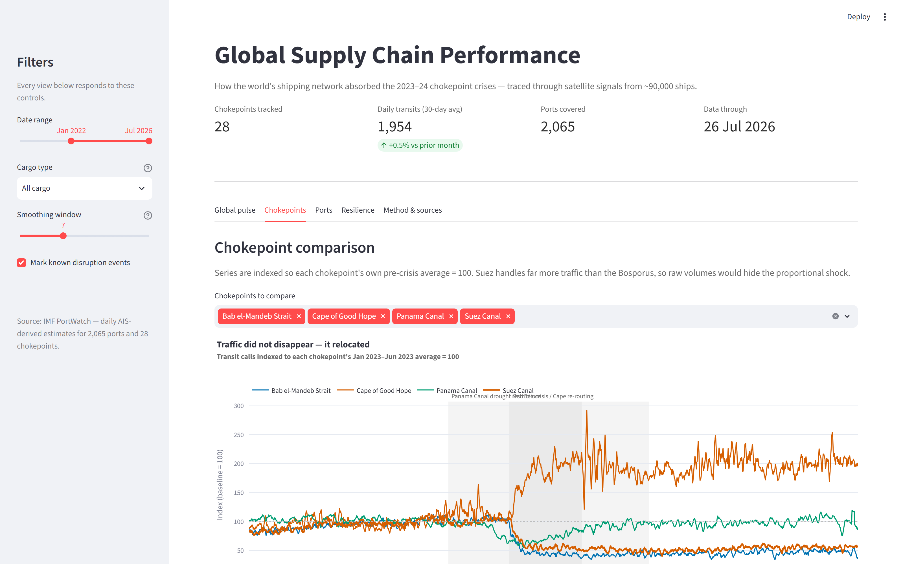
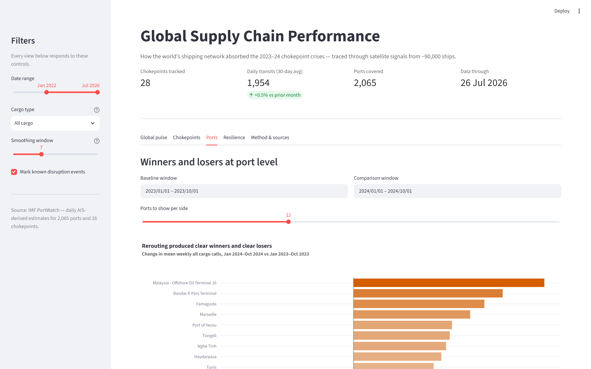
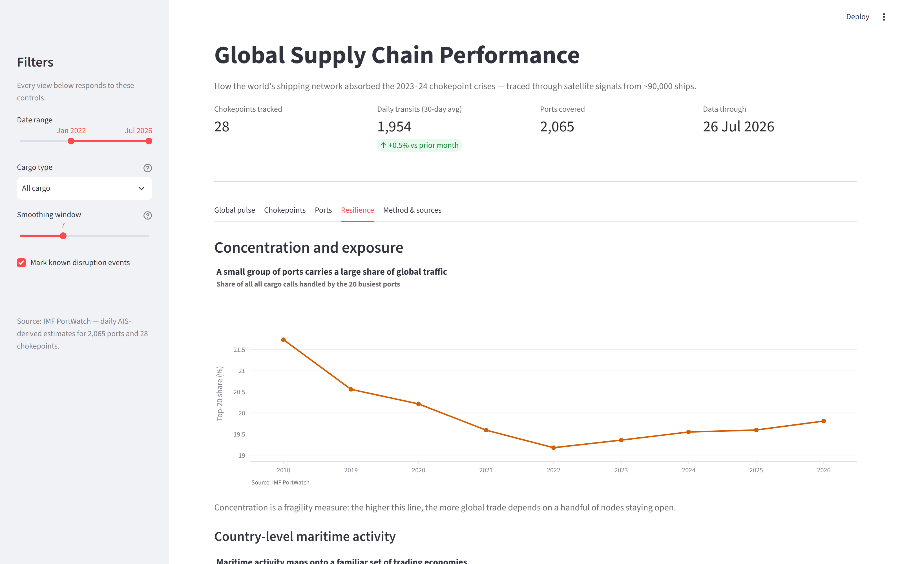

DATA VISUALIZATION · SUMMER 2026 · FINAL INDIVIDUAL PROJECT
When the World's Shipping
Lanes Narrowed
A data-visualization study of global supply chain performance, 2019–2026 —
built on IMF PortWatch's satellite AIS record of ~90,000 vessels.
10 analytical questions
Plotly · publication-ready
Interactive Streamlit dashboard
Yashu Bopanna Pasura Devaiah
The story in one sentence
Trade didn't shrink — it moved, and not evenly
Between late 2023 and 2024, two of the world's four critical maritime chokepoints
constricted at the same time: the Red Sea to conflict, the Panama Canal to drought. The satellite
record shows exactly how the fleet absorbed it — and who paid the price.
−62% / −76%
Suez & Bab el-Mandeb transit calls fell from baseline — still down
roughly half a year+ later
+104%
Cape of Good Hope traffic vs. its own baseline — the reroute overshot,
it didn't just offset
6.5 months
Panama and the Red Sea/Cape corridor were constrained
simultaneously — no easy alternative
~30%
Share of global container calls held by the top 20 ports —
flat since 2019, not rising
The next ten slides derive each of these numbers from the data — one analytical question at a
time, each with its own publication-ready figure and an honestly reported finding, including two
null results and one reversed hypothesis.
Dataset
IMF PortWatch — real-world, rich, and varied
Daily port-call and trade-volume estimates for 2,065 ports and daily transit counts
for 28 major chokepoints, derived from satellite AIS signals broadcast by ~90,000 vessels.
Published by the IMF, updated weekly.
| Type | Columns |
|---|
| Temporal | date, year, month, day — daily, 2019 → present |
| Spatial | port coordinates, country, ISO3, 28 named chokepoints |
| Categorical | 5 cargo classes; port systemic-importance proxy |
| Numerical | port calls, import/export volume, transit capacity |
Secondary sources joined in the analysis
- World Bank LPI — logistics quality per country (Q7)
- NY Fed GSCPI — monthly global supply-chain pressure index (Q10)
Caveat, stated up front: port calls are observed vessel movements; trade volumes are
model-based estimates from vessel type/capacity/draft, not customs records. Every
finding here is framed as relative change over time for exactly this reason.
Methodology
One shared toolkit, used consistently across all ten questions
Analytical techniques
- Baseline indexing — rebase each series to its own pre-crisis average = 100, so
passages of very different size are visually comparable
- Centred rolling smoothing — removes the weekly port-operations cycle without
shifting turning points
- Coefficient of variation — ranks volatility across chokepoints of any size
- Recovery half-life — days to climb back to half the post-shock gap
- HHI / top-20 share and lead-lag cross-correlation for concentration and
the GSCPI comparison
Design system (course requirements)
- Okabe–Ito CVD-safe palette — one shared Plotly template for every figure
- Muted grey for context, one highlight colour per chart
- No gridlines, no chart junk, clean white background
- Titles state the takeaway — not the axes
- Findings reported honestly — including two null results and one reversed hypothesis
Q1 · Setting the scene
Did traffic lost at Suez reappear at the Cape of Good Hope?
What we found. Suez and Bab el-Mandeb fell 62% and 76% from baseline and are still running
roughly half their pre-crisis level. The Cape didn't just absorb the loss — it overshot it,
running at 2× its own baseline. The offset is not proportional: more Cape transits are
needed to move the same cargo one Suez transit used to carry.
Q2 · Setting the scene
Did every cargo type reroute the same way?
What we found — the hypothesis didn't survive contact with the data. We expected container
traffic to flee first. Instead, Ro-Ro (vehicle carrier) traffic fell hardest, down 93%,
while general cargo fell least (−40%). Plausibly, Ro-Ro cargo is both schedule-sensitive and
the vessels comparatively exposed to the reported attacks — the strongest incentive to reroute
entirely rather than accept the risk.
Q4 · The shock
Did Panama and the Red Sea compound each other?
What we found. The two disruption windows overlapped for 6.5 months
(15 Dec 2023 – 30 Jun 2024). Panama transits fell 53% from their pre-drought baseline for the
entire overlap, at the same time Suez/Bab el-Mandeb were down 62–76%. Both of the fastest
Asia–US-East-Coast routes were constrained at once — the crux of the whole story.
Q5 · The shock
Which ports won and lost — and where?
What we found. The losers are geographically coherent and point straight at the Red Sea:
King Abdullah Port (−81%), Aqaba (−71%), and Jeddah (−37%) —
all Red Sea-facing gateways that lost transiting feeder traffic. Winners cluster on the
Mediterranean/Black Sea side (Iskenderun +76%, Mersin +36%, El Sokhna +42%), though not every
gainer shares the same cause.
Q6 · The shock
Is global container traffic becoming more concentrated?
An honest null result. The top-20 ports' share of global container calls is essentially
flat — 30.9% in 2019 vs. 31.3% in 2026, drifting inside a narrow 29–31% band even through
the crisis. Concentration didn't rise because of the disruption. But a stable ~30% share sitting
in just 20 of ~2,065 ports is itself the finding: that structural exposure never went away.
Q7 · Who coped
Does logistics quality buy resilience?
What we found. A weak-to-moderate positive correlation (r = 0.39, n = 17) in the
predicted direction — but Singapore, the highest-LPI country in the sample, had the single
longest recovery (63 days), plausibly because it's itself a Suez/Bab el-Mandeb transhipment
hub. Suggestive at best, not a demonstrated causal link, with one shock and a small sample.
Q8 · Who coped
Which economies are most exposed to a single chokepoint?
What we found. The proxy cleanly splits two economy types: small island/coastal economies —
French Polynesia, Cayman Islands, Haiti, Puerto Rico (93–97% import-dependent) — versus
resource exporters — Kazakhstan, Russia, Australia (5–9%). A trade-balance proxy, not a
measured routing exposure, but a clear structural pattern regardless.
Q10 · Who coped
Does the Fed's supply-chain index track the ships?
What we found. Best-fit lag of +6 months, but only weakly correlated (r = 0.25).
GSCPI barely reacts to the chokepoint-level disruption that the AIS data shows clearly around
2023–24 — the survey-based index and the physically observed fleet tell related but
distinct stories, not strongly enough to claim either reliably leads the other.
Interactive dashboard
A curated, five-tab Streamlit dashboard
Global pulse · Chokepoints · Ports · Resilience · Method & sources — every view
responds live to a shared set of filters: date range, cargo type, smoothing window, and disruption
event markers.
Same CVD-safe palette as the notebook
Live filtering, not static charts
Deployed on Streamlit Community Cloud
Dashboard snapshot
Global pulse & chokepoint comparison

Tab 1 — where the world's ships are calling, plus aggregate transit volume

Tab 2 — user-selected chokepoints, indexed and compared live
Dashboard snapshot
Port-level winners & losers, on demand

Tab 3 — pick any baseline/comparison window, see the ports that moved

Tab 4 — concentration trend and country-level exposure
Conclusions
One story, told from five directions
1
The shock was real and large — Suez/Bab el-Mandeb fell
62–76% and stayed there.
2
It was a rerouting, not a contraction — the Cape overshot
its baseline; cargo types responded unevenly, overturning our initial hypothesis.
3
It was unusually hard to escape — Panama and the Red Sea
narrowed together for 6.5 months, removing the two fastest alternatives at once.
4
Costs landed unevenly, along clear geographic lines — while
structural concentration in the top-20 ports stayed flat throughout.
5
Resilience is harder to pin down than the shock itself —
logistics quality, port rhythm, and the survey-based pressure index all produced honest,
modest, or null results rather than clean answers.
Limitations
What this analysis can't tell you
- PortWatch volumes are AIS-derived estimates, not customs records — every finding is
framed as relative change for this reason.
- Vessel counts are not capacity — a shift to fewer, larger ships would understate volume.
- Event dates shown as shaded bands are drawn from public reporting, used as context,
not as data.
- Q7's correlation is drawn from a single shared shock and n = 17 — suggestive, not causal.
- Q8's exposure measure and Q9's port classification are documented modelling choices,
not measured routing assignments.
Thank you
One dataset. Ten questions. One story.
📄 License — MIT
✍️ Author — Yashu Bopanna Pasura Devaiah